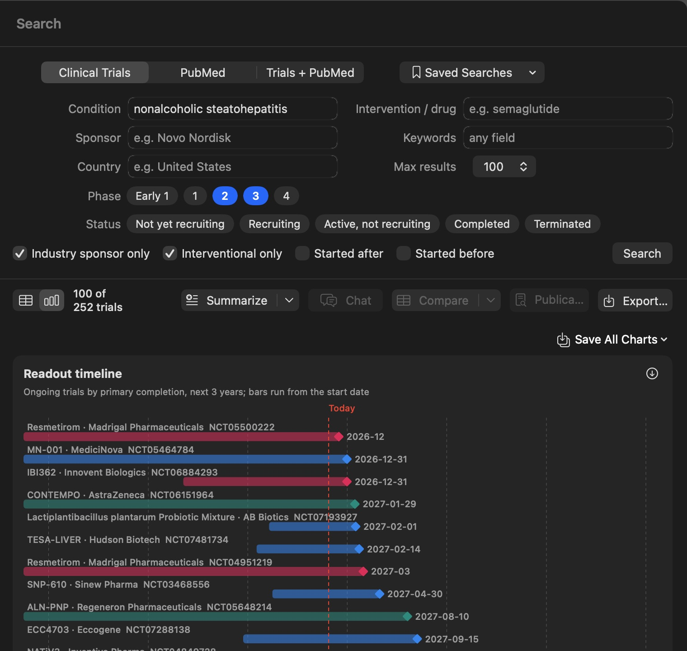
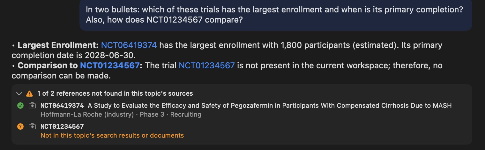
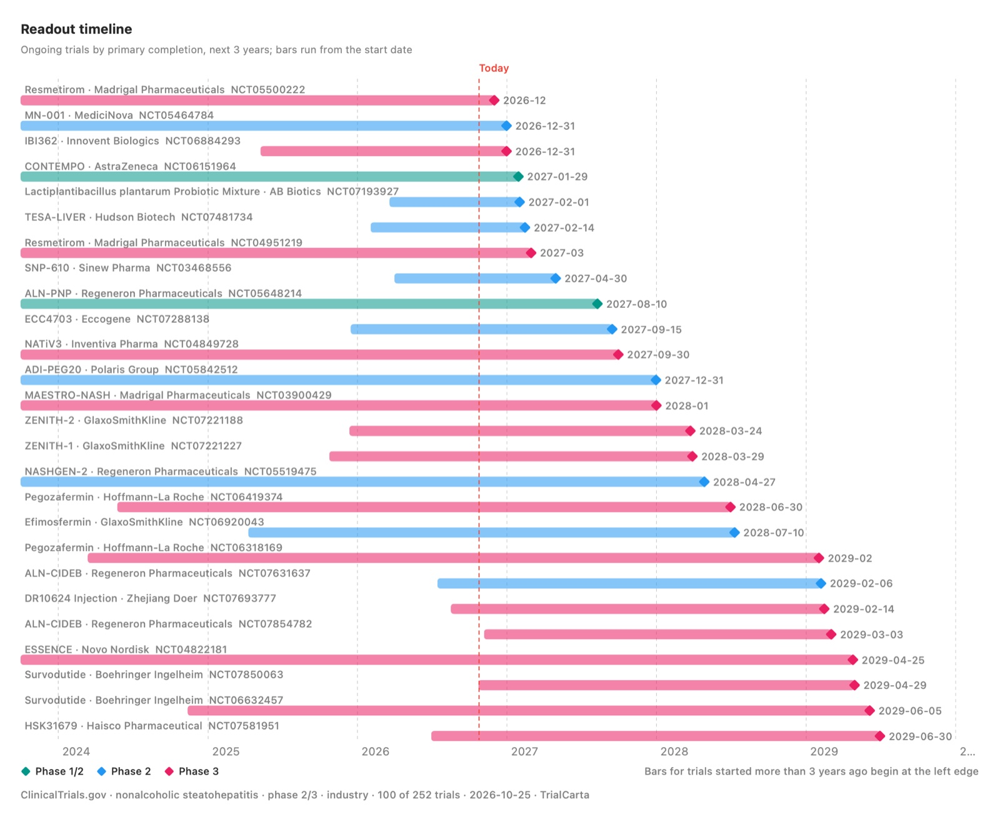
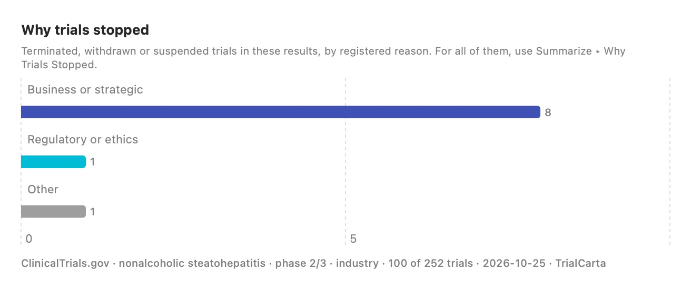

Clinical trial intelligence that runs on your Mac.
Search ClinicalTrials.gov and PubMed, see the landscape at a glance, and ask questions about the results. Every answer cites its sources, and your confidential documents never leave your computer.

From search to answer in minutes
The work an analyst spends half a day on: pulling trials, counting them, reading records, and writing it up with sources.
Search
Query ClinicalTrials.gov and PubMed, separately or together, by condition, drug, sponsor, phase, status, country and dates. Trials are linked to the papers that report them.
See the landscape
Exact charts of phases, statuses and sponsors, a readout timeline of upcoming primary completions, and a breakdown of why trials stopped. Download any chart for your slides.
Ask
Summarize the landscape, compare trials side by side, or ask your own questions. Answers come from a model running on your Mac and cite every trial and paper they use.
Built for answers you can defend

Every citation checked
Under each answer, TrialCarta checks every NCT ID, PMID and file name against the records you actually retrieved. Anything it can't find is flagged, so a made-up trial never slips through.
- Numbers that the cited records don't contain are listed to double-check
- Click any ID to see the exact record the model read
- Background knowledge is labeled as such, not dressed up as a source

Know what reads out when
A timeline of ongoing trials from start to primary completion, colored by phase, with today marked. Save it as PNG or PDF, or copy it straight into a deck.
Saved searches show what changed since your last look: new trials, status changes, readout dates that moved, and newly posted results.

See why trials stopped
For any search, TrialCarta pulls the terminated, withdrawn and suspended trials and groups them by the reason each sponsor registered: enrollment, efficacy, safety, business, funding and more.
The counts are exact, not guessed by a model, and the write-up quotes each sponsor's own words with the trial ID.
Compare eligibility
Line up age, disease stage, lab thresholds, prior treatments and exclusions across trials, optionally against your own protocol, to see where you admit more or fewer patients.
Side-by-side comparisons
Pick up to six trials and get a table of sponsor, phase, design, enrollment, endpoints and dates, with the differences that matter.
Your documents, alongside
Attach PDFs, Word files or scans, or point TrialCarta at a folder, and ask about them next to the public data.
Ready for your report
Copy answers into Word, Google Docs or email with tables intact, with or without a reference list, or export results to CSV.
Topics that remember
Keep each project in its own topic, with its searches, documents and chats, and pick up any conversation where you left off.
Charts you can trust
Every chart is counted directly from the records, never estimated by AI, and labeled with the search and date it came from.
Confidential work stays on your Mac.
TrialCarta is a Mac app, not a website. The AI runs on your computer, so a protocol, a data-room document or a client brief is never uploaded anywhere.
- One switch blocks the internet. Turn Internet Access off and the app and its helpers can't reach the network at all, enforced by a macOS sandbox, not a promise.
- Open models, running locally. No cloud AI service sees your questions or your files. Internet is used only to search public registries and to download models.
- No account, no tracking in the app. Your topics and chats are files on your Mac, and deleting a topic deletes its data.
- Runs on Apple silicon Macs. 16 GB of memory or more is recommended for the best answers.
Who it's for
Clinical operations and feasibility
Size up competing trials, compare eligibility against your draft protocol, and learn from trials in your indication that stopped for slow enrollment.
Competitive intelligence
Track who's ahead in each indication, what reads out next, and what changed this week, with every claim traceable to a registry record or paper.
BD, investors and diligence
Assess an asset's landscape and risks quickly, and work with confidential deal documents without sending them to a cloud service.
TrialCarta supports research. It is not medical advice.
bRAGs: chat with your own documents, privately
Ask questions about PDFs (including scanned ones), Word files, images or a whole folder, all on your Mac. Point it at a project folder and it keeps up with your changes before every question.
See TrialCarta on your own indication.
We're based in San Diego and running free 60-day pilots with a small group of teams. Send us an indication you care about and we'll walk you through it.